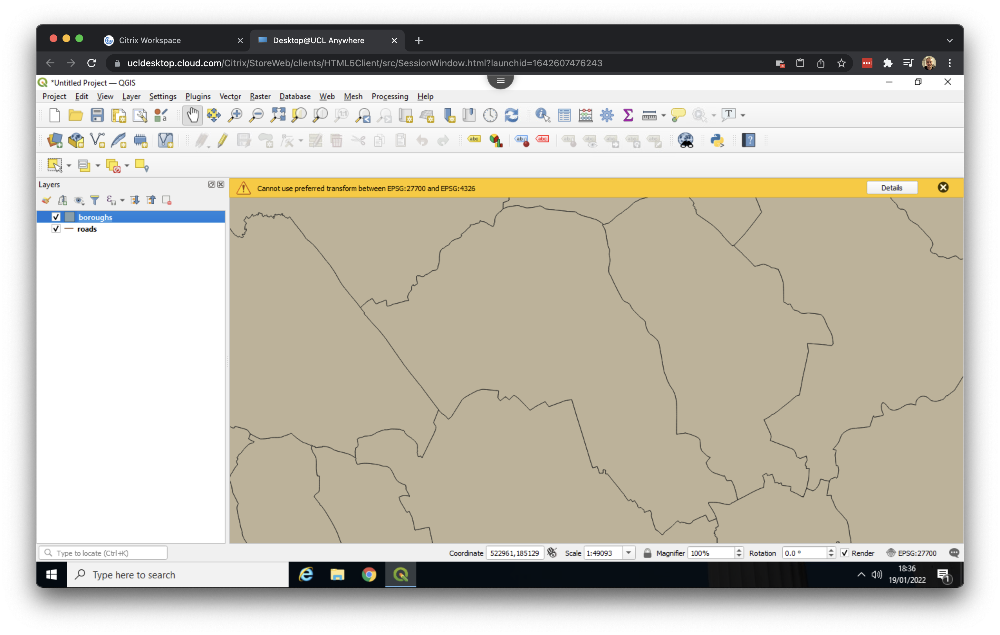
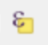

1 Data mapping
1.1 Starting QGIS
Now we have downloaded and organised our data, we can open QGIS. QGIS is a free and open-source cross-platform desktop geographic information system application that supports viewing, editing, and analysis of geospatial data. In the search box of the task bar, type in QGIS and click on QGIS Desktop 3.28 to open the software.
Do not use QGIS 2.18 as the steps in this tutorial will not work!
It may take a little while before QGIS has started, so be patient. In some cases Desktop@UCL Anywhere fails to start QGIS on the first attempt, you may have to give it several attempts. Once QGIS has started, you will see the QGIS interface:
On the left hand sizes you see two panels: Layers and Browser. We do not really need the second one, so you can close it by clicking on the x.
1.2 Loading spatial data
We can now start by adding our spatial data. We will start by adding our roads layer. Click on Layer > Add Layer > Add Vector Layer ….

Click on the three dots (…) next to the Vector Dataset(s) box and navigate to your working directory. Then go into your roads folder and click on the roads file with the SHP File type. This is the roads shapefile that we want.

Click Open. Then click Add. If you get a message popping up saying something about “Select Transformations for roads” just click on OK. Now Close the dialog box. You should now see the road network of Camden and Islington loaded:

Now repeat these steps for our boroughs file, making sure again that inside your boroughs folder you select the boroughs file with the SHP File type. You now will have both data loaded, although the boroughs layer will be drawn on top of your roads layer.
QGIS randomly picks a colour when a map layer is first loaded, so the colours of your roads and boroughs file may be different than the ones shown in the screenshots.

1.3 Organising our layers
Now we have our first set of data loaded, we can reorganise them a little. In the Layers panel, we can drag the roads layer on top of the boroughs layer to change the drawing order. We can also zoom to a layer’s full extent (right click on roads or boroughs > Zoom to Layer), change a layer’s colour (right click on roads or boroughs > Properties … > change the colour under the Symbology tab), and zoom in and out of the map by scrolling:

Before doing anything else, now would be a good time to save our QGIS project. Go to Project > Save as and save your file in your working directory as crime_map.

1.4 Inspecting our data in Excel
The next thing we want to do is have a closer look at the crime data that we downloaded before loading them too in QGIS.
The crime file that we downloaded is in a so-called csv format. csv stands for comma (or character) separated values. A csv file can be thought of as stripped down Excel spreadsheet in which every column of data is separated by a comma. If you open a csv file within Excel, however, it will look “normal”.
Navigate to your working directory and go to crime_met_november2021 > 2021_11. Now open the 2011-11-metropolitan-street file using Excel.

csv. [Enlarge image]Besides a column containing a unique Crime ID as well as the Month in which the crime has been recorded, our crime data set contains several other columns of data:
| Column | Meaning |
|---|---|
Reported by |
The force that provided the data about the crime. |
Falls within |
The area in which the crime was recorded. |
Longitude and Latitude |
The anonymised coordinates of the location of the crime. |
LSOA code and LSOA name |
References to the Lower Layer Super Output Area that the anonymised point falls into, according to the LSOA boundaries provided by the Office for National Statistics. |
Crime type |
One of the crime types used to categorise the offence. |
Last outcome category |
A reference to whichever of the outcomes associated with the crime occurred most recently. |
Context |
A field provided for forces to provide additional human-readable data about individual crimes. |
For us, the main fields we are interested include Longitude and Latitude (for plotting the crimes in QGIS) as well as Crime Type (to filter crime based on type of crime). After inspecting the data, you can close Excel again. Make sure that you do not save the file.
1.5 Loading our data into QGIS
Now we know what we are dealing with, we can load our crime data into QGIS. To do so, there are several steps we need to take:
- Go to Layer > Add Layer > Add Delimited Text Layer …. Because our data is a
csvfile we need to load it as a file in which columns are delimited by a certain character; a comma in our case. - Click on the three dots (…) next to the File name box and navigate to your working directory. Then go into your
crime_met_november2021folder, your2021-11folder, and Open the2021-11-metropolitan-streetfile. - Under Geometry Definitions make sure that X field is set to
Longitudeand Y field is set toLatitude. Here we inform QGIS that we are dealing with locations. - Without going into further details, we need to tell QGIS which map projection was used to record the crime locations. By specifying a map projection QGIS will know how to plot the crime locations in their correct positions. To do so, still under the Geometry Definitions tab, click on the Select CRS button. You will find this is directly next to the invalid projection message. In the Filter box type:
EPSG 4326. Only one option should show up:WGS 84. Select this option and click OK. - Now click Add. This may take a little bit of time! Click Close to exit the dialog box.
The GIF below summarises these steps:

Here we now have every crime reported for the month November 2021 appearing across all of London. We can zoom to the Camden and Islington by right clicking on the roads layer and opting for Zoom to Layer:

1.6 Making selections
Because the crime data set covers the whole of London, and even records some crimes in locations outside of London, QGIS may get a little slow. As we are only interested in crimes in Camden and Islington we want to filter out only those crimes that took place within the boundaries of these boroughs, and remove the rest. We will do that in two steps. First, we will export the boundaries of Camden and Islington as a separate file. Second, we will select the crimes that fall within the boundaries of Camden and Islington. Let’s first export the boundaries of Camden and Islington:
- Untick the boxes of the
roadsand2021-11-metropolitan-streetlayers in the Layers panel to deactivate them. - Select the
boroughslayer by clicking on it. - Click on the Select Features by Area or Single Click button:

The Select Features by Area or Single Click button may be found at a different position in the menu than shown in the GIF below.
- Press and hold the Shift button on your keyboard and click on Camden and Islington.
- Right click on the
boroughslayer in the Layers panel > Export > Save Selected Features As …. - Set the Format to Esri Shapefile.
- Click on the three dots (…) next to File name, navigate to your working directory and Save the file as
cam_is. - A new layer should now appear and you can untick the box next to the
boroughslayer.
The GIF below summarises these steps:

The next thing to do is to extract only those crimes that fall within the boundaries of our newly created shapefile:
- Go to Vector > Geoprocessing Tools > Clip ….
- Set
2011-11-metropolitan-streetas Input layer and setcam_isas Overlay layer. - Click on the three dots (…) next to the empty box with [Create temporary layer] and opt for Save to File …. Navigate to your working directory and type in
cam_is_clipas File name. Change Save as type toSHP files (*.shp)and click Save. - Click Run. This may take a few seconds. Once the process is done, you can click Close.
We now have successfully ‘clipped’ the crimes that occurred within the boundaries of Camden and Islington. The GIF below summarises these steps:

Before moving to our visualisation, we can remove the 2011-11-metropolitan-street layer by right clicking on the layer in the Layers panel and opting for Remove Layer…. We can do the same for the boroughs layer. Our QGIS screen should now look something like this:

Do not forget to save your progress once a while!
1.7 Visualising data
Based on the shapes of the streets and the outline of the street network, you may be able to recognise some streets already. However, we can also add something called a base map layer. A base map is a layer with geographic information that serves as a background and is incredibly useful when you want to add some context to your map. We do need a little plugin to add this base map. We can do that as follows:
- Go to Plugins > Manage and Install Plugins.
- Search for QuickMapServices and click on Install plugin.
- Once the plugin is installed you can go to Web > QuickMapServices > OSM > OSM Standard. It may take a few seconds to load the base map.
- Turn off the Camden and Islington map layer (
cam_is) in the Layers panel by unticking it.
OSM stands for OpenStreetMap. OpenStreetMap is a collaborative project to create a free editable geographic database of the world, comparable to Wikipedia but then for spatial information.
You now have a view of the street data, pulled from OpenStreetMap, with the crime data drawn on top. The GIF below summarises these steps:

The next thing we want to do is get some more insight into our crimes. As we know: the data records crime by type, so let’s use this information in our visualisation:
- Right click on the
cam_is_cliplayer in the Layers panel and click on Properties …. Here we can change the symbology of the layer. - At the top of the menu change Single Symbol to Categorized.
- Click on the Value drop-down menu and select
Crime type. Note that these are the columns that we have seen when we looked at the data in Excel. - At the bottom of the menu click on Classify. All the different crime types now appear, with each their own symbol. Click Apply andExpression click OK.
The QGIS screen now shows a colour for each crime type. The GIF below summarises these steps:

In the Layers panel, you can now expand the cam_is_clip layer and switch on and off individual crime types by ticking or unticking their respective boxes:

In addition, we can create a hotspot or heatmap. QGIS can do this automatically by mapping the density of the points:
- Right click on the
cam_is_cliplayer in the Layers panel and click on Properties …. Here we can change the symbology of the layer. - At the top of the menu change Single Symbol to Heatmap.
- Using the drop-down menu, change the Color ramp to Magma for a little more exciting map.
- Under Layer Rendering set the Opacity to 60%, so to blend the heatmap with the OSM basemap. Click Apply. This may take a few seconds. Then click OK.
We now have created a rather nice visualisation of all crime in Camden and Islington. The GIF below summarises these steps:

The resulting map is relatively dark. For your worksheet assignment you may want to select a different colour ramp or you may try to edit the Magma colour ramp by setting the first colour of the Color ramp transparent: instead of changing the Color ramp to Magma, select the Edit Color Ramp … option. Here you can set Color 1 to Transparent. You can also adjust the colours by playing around with the Gradient Stops in the same menu. Once you are happy with the changes you have made to the colour palette click OK. Then click Apply followed by OK to exit the menu.
But what if we only want to create a density map only for a given crime type such as anti-social behaviour? We can do that as follows:
- Right click on the
cam_is_cliplayer in the Layers panel and click on Open Attribute Table. - In the Attribute Table click on the button that says Select Features Using Expression:

- Double click on
Crime typein the Fields and Values drop-down menu. Thecrime typevariable now gets added to the Expression. - Directly next to the
"Crime type"part of the expression type=. - Now click on the All Unique button to get all unique values that are stored in the
crime typevariable. Double click on Anti-social behaviour to add this to the expression. - Click on select Features and Close the dialogue box and the Attribute Table. The selected crimes should now show up in yellow.
Just as we did before with our two boroughs, we can export our selection to a new shapefile:
- Right click on the
cam_is_cliplayer in the Layers panel > Export > Save Selected Features As …. - Set the Format to Esri Shapefile.
- Click on the three dots (…) next to File name, navigate to your working directory and Save the file as
cam_is_asb. - A new layer should now appear and you can untick the box next to the
cam_is_cliplayer.
Once you have a new layer, you can update the symbology again to create a heatmap. The GIF below summarises these steps:

shapefile. [Enlarge image]1.8 Creating a map
We have been through the key steps that we need to create the map, however, there are some other things we can do. For instance, if we want to put the borough outlines on, we can:
- Tick the box next to the
cam_islayer in the Layers panel to switch the layer back on. - Right click on the
cam_islayer and choose Properties. - Under the Symbology tab we can make some adjustments to the Simple Fill settings: in this case we can set the Fill style to No brush. We can also make the outline thicker by increasing the Stroke width. Once this is done click Apply followed by OK.
The GIF below summarises these steps:

In this exercise we have downloaded some data, created a spatial data object by loading the data into QGIS, made selections to our data (i.e. by clipping out our boroughs and by making a selection on crime type), and we have looked at some of the styling options. The final step is to finalise the styling and get the map out of QGIS. This is done through the QGIS Print Layout:
- Go to Project > New Print Layout ….
- Give it a name, e.g.
crime_asb. - A new window opens up. In the toolbar on the left hand side, click on the Add map button:

- Draw a box on the canvas. The crime map should now appear.
- Using the toolbar on the left hand side, there is several other options such as Add scale bar, Add North Arrow, and Add Legend. There are lots of options to play around with!
- Once you are happy with your map, you can save your map by going to Layout > Export as Image …. If you get a message popping up saying something about “Project Contains WMS Layers” just click on Close. Navigate to your working directory, give your map a name and click Save. Also click Save on the next window that pops up.
These steps should create an image which you should be able to find in your working directory. The GIF below summarises these steps:

This image is now ready to be used outside QGIS.
The map that we have created now requires some TLC on the styling front. There are many more options on how to style the maps, so do play around with colours and settings when making your maps. Have a look at the QGIS tutorial on Using the Print Layout and QGIS manual on Laying out maps.